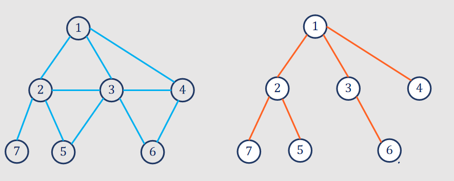

A graph is a data structure that consists of a finite set of vertices (or nodes) and a collection of edges connecting these vertices. The edges may or may not have a direction, and they may have weights or labels. Graphs are used to represent relationships and connections between different entities.
Components of a Graph:
Vertices (Nodes):
The fundamental entities in a graph.
Represented by points in a graph.
Edges:
Connections between vertices that represent relationships.
An edge can be directed (arrow indicating a one-way connection) or undirected (no direction).
Types of Graphs:
Directed Graph (DiGraph):
Edges have a direction, indicating a one-way connection.
Undirected Graph:
Edges have no direction; connections are bidirectional.
Weighted Graph:
Edges have weights or costs assigned to them.
Cyclic Graph:
Contains at least one cycle (a path that starts and ends at the same vertex).
Acyclic Graph:
Does not contain any cycles.
Connected Graph:
There is a path between every pair of vertices.
Disconnected Graph:
Contains at least two vertices with no path between them.
Graph Representation:
Adjacency Matrix:
A 2D array where the entry matrix[i][j] represents whether there is an edge between vertices i and j.
Graph Operations:
Add Vertex and Edge:
Adding new vertices and connecting them with edges.
Remove Vertex and Edge:
Removing vertices and edges from the graph.
Traversal:
Visiting all vertices and edges in the graph following a specific order.
Common traversal algorithms include Depth-First Search (DFS) and Breadth-First Search (BFS).
Applications of Graphs:
Networks:
Modeling social networks, computer networks, transportation networks.
Routing Algorithms:
Finding the shortest path between two vertices.
Dependency Analysis:
Analyzing dependencies between different components.
Circuit Design:
Representing connections in electronic circuits.
Recommendation Systems:
Providing recommendations based on connections in user data.
Graph Traversal Techniques:
Breadth-First Search (BFS):
Description:
BFS explores all the vertices at the current level before moving on to the next level.
Uses a queue to maintain the order of vertex exploration.
Algorithm:
Start at a source vertex and mark it as visited.
Enqueue the source vertex.
Dequeue a vertex and visit its unvisited neighbors.
DFS explores as far as possible along each branch before backtracking.
Uses a stack (either explicitly or through recursion) to keep track of vertices.
Algorithm:
Start at a source vertex and mark it as visited.
Explore an unvisited neighbor of the current vertex.
If no unvisited neighbor, backtrack to the previous vertex.
Repeat steps 2-3 until all vertices are visited.
Minimum Spanning Tree (MST):
A Minimum Spanning Tree (MST) of a connected, undirected graph is a tree that spans all the vertices of the graph and has the minimum possible total edge weight. In other words, it is a subset of the edges of the graph that forms a tree and connects all the vertices with the minimum total edge weight.
Key properties of a minimum spanning tree:
Connectivity: It connects all the vertices in the original graph.
Acyclic: It forms a tree, meaning there are no cycles in the tree.
Minimum Weight: The sum of the edge weights in the tree is minimized.
1. Kruskal's Algorithm:
Algorithm Steps:
Initialize the MST as an empty set.
Sort all the edges in non-decreasing order of their weights.
Iterate through the sorted edges and add each edge to the MST if it does not form a cycle.
Stop when the MST contains (V-1) edges, where V is the number of vertices.
{kind=link}
{kind=link}
{kind=link}
{kind=link}